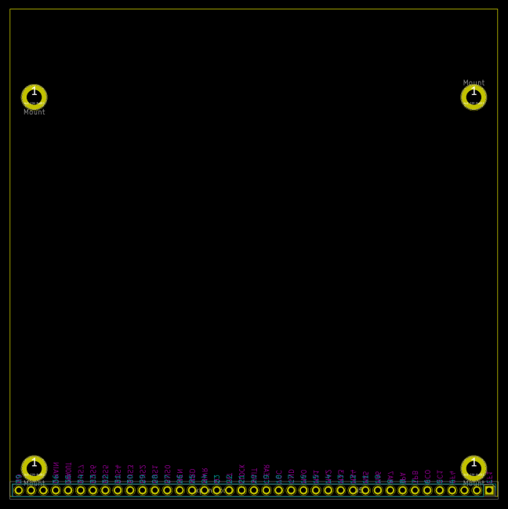

This project template is the basis of an expansion board for the 1802/Mini microcomputer based on the CDP1802 processor.
This base project includes a PCB edge defined as the same size as the 1802/Mini Processor PCB with an expansion header and mounting holes placed correctly to align the two boards.
The board outline looks like the following:

(c)2021 David Madole